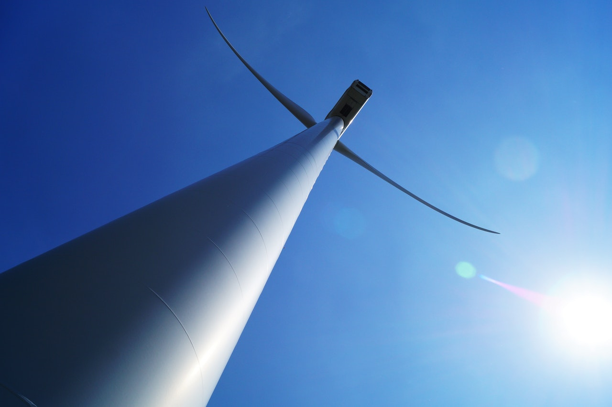
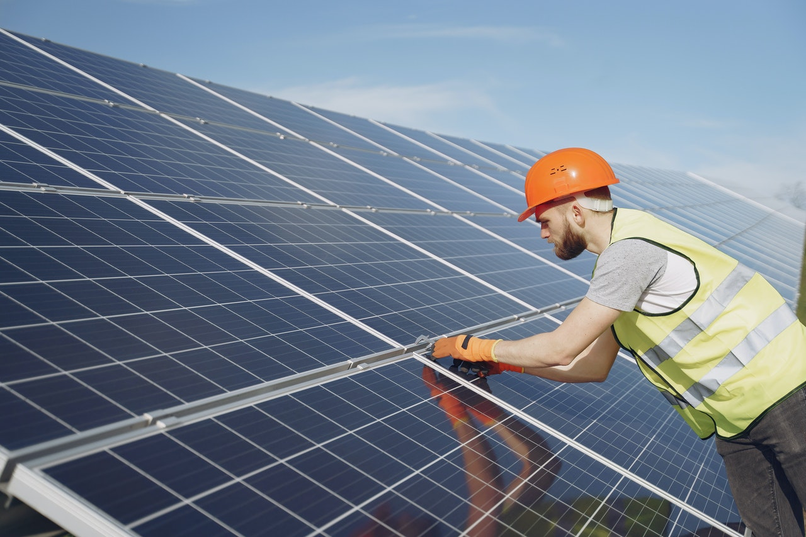
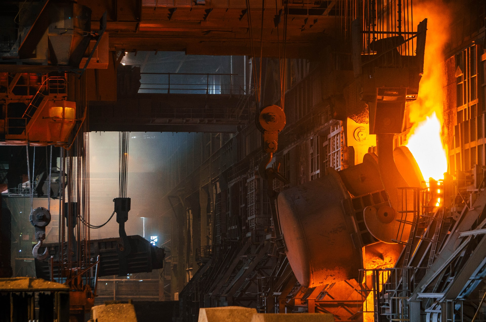

BEYOND AVIATION
Our products are applicable to sectors above and beyond aviation. These include renewable energy and power generation, commodity transportation, structural engineering, marine propulsion, and space propulsion. As with aviation, our objective in these sectors is to provide a comprehensive picture of the health of the assets; a few of them are described below.WIND TURBINE GEARBOXES

Wind turbines have large rotor blades mounted to a shaft that is connected to a gearbox. This gearbox must be routinely visually inspected (through borescopes and videoscopes) and requires an engineer to climb all the way to the helm of the wind turbine. Wind turbines also have numerous performance sensors that enable remote health assessments. Using our suite of tools, we offer:
- Schedule planning, i.e., when an inspection needs to be performed and what kind of support is required.
- Sensitivity analysis, i.e., understanding the impact of operating conditions and weather on asset lifetime and maintenance.
- We do this by fusing inspection videos, environmental data, maintenance logs, and asset sensor data, delivering enhanced asset awareness across a fleet of wind turbines.
SOLAR PANELS

For industrial solar farms, damage and degradation can not only impact the efficacy of the photovoltaic cells but will also lead to significant costs for asset managers. The type of damage can vary and can be caught by human or drone visual inspections, and by monitoring the power output of the cells. We offer the following services for the maintenance of solar farms:
- Automated damage identification and classification: Such as damage to the edge seal, scratches on the glass / polymer front face, corrosion and diffuse burn marks, silicon module discoloration and absorbed delamination. Our tools ingest the images and videos provided by drone and human inspectors to accurately identify the damage and extent thereof.
- Guidance on fauna impact: Animals can bite wires, cables and junction boxes causing damage. We fuse data from local wildlife surveys to provide asset managers with information regarding this.
- Performance monitoring: Fusing weather data with photovoltaic cell output over many panels facilitates more appropriate farm maintenance schedules.
STEAM AND GAS TURBINES

Just like their aviation counterparts, steam and gas turbines provide power across numerous industries. These include shipping, construction, mining, and infrastructure. Both visual and sensor-based asset monitoring is critical as individual assets are extremely expensive any maintenance down-time should be meticulously planned. Our offering here is comprises of the following:
- Automated damage identification and post-processing of borescope / videoscope data of blade rows and combustion chambers.
- Impact of environmental effects on asset performance, including local water quality.
- Enhanced asset maintenance planning and remaining useful life estimation.